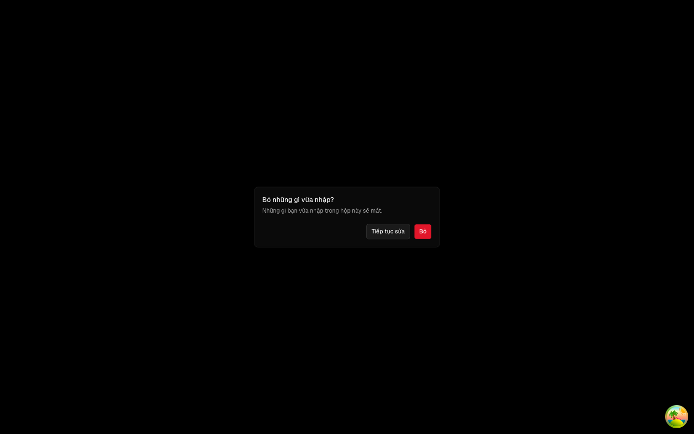
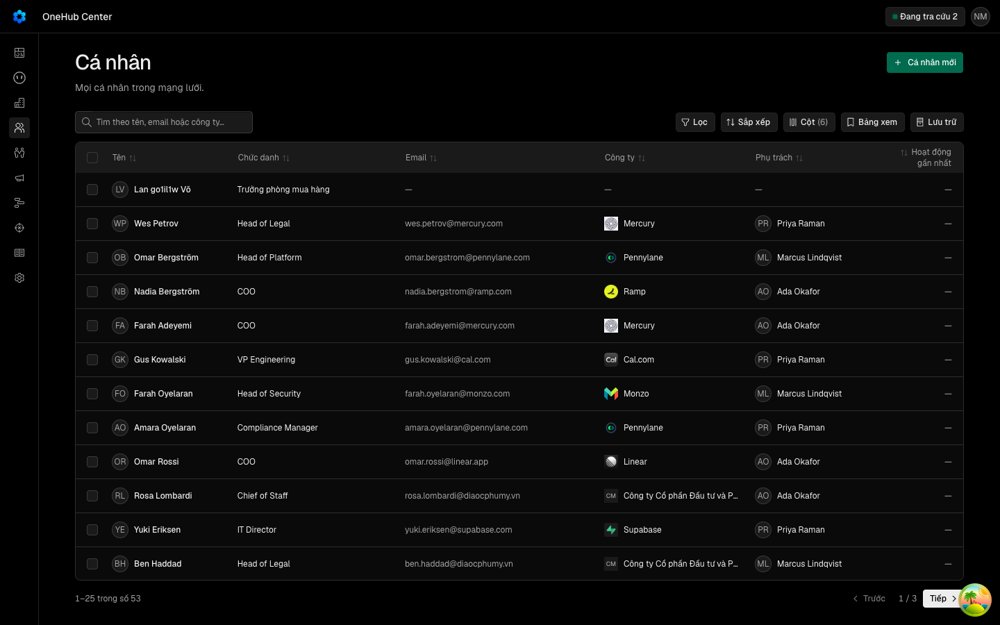

Màn Deals hydrat khớp máy chủ — ô Giai đoạn hết lệch «QUALIFIED_TO_BUY» ↔ «Qualified to buy», hết lỗi «Hydration failed» chập chờn khi tải /deals
Các eval
| Eval | Tiêu chí | Loại | Verdict | run_id | verified_at |
|---|---|---|---|---|---|
| E1 | AC-1 | test | PASS | minted-hydrat-giai-doan-deals-E1-r2 | 2026-09-30T11:46:16Z |
| E2 | AC-2 | test | PASS | minted-hydrat-giai-doan-deals-E2-r2 | 2026-09-30T11:46:16Z |
| E3 | AC-3 | test | PASS | minted-hydrat-giai-doan-deals-E3-r2 | 2026-09-30T11:46:16Z |
| E4 | AC-4 | test | PASS | minted-hydrat-giai-doan-deals-E4-r2 | 2026-09-30T11:46:16Z |
| E5 | AC-5 | test | PASS | minted-hydrat-giai-doan-deals-E5-r2 | 2026-09-30T11:46:16Z |
| E1d | AC-1 | script | PASS | minted-hydrat-giai-doan-deals-E1d-r2 | 2026-09-30T11:46:16Z |
| E6 | AC-6 | ui-check | PASS | ui-E6-hgd-man | 2026-09-30T11:46:16Z |
| E6d | AC-6 | script | PASS | minted-hydrat-giai-doan-deals-E6d-r2 | 2026-09-30T11:46:16Z |
| E7 | AC-7 | ui-check | PASS | minted-hydrat-giai-doan-deals-E7-r2 | 2026-09-30T11:46:16Z |
| E8 | AC-8 | script | PASS | minted-hydrat-giai-doan-deals-E8-r2 | 2026-09-30T11:46:16Z |
| E9 | AC-9 | script | PASS | minted-hydrat-giai-doan-deals-E9-r2 | 2026-09-30T11:46:16Z |
Chi tiết từng eval
PASS E1 · test
AC-1: Given cây giai đoạn và cache phía máy chủ trống, When máy chủ render cây, Then HTML của ô giai đoạn chứa nhãn «Qualified to buy» với `data-tone="info"`; And HTML không có chữ `QUALIFIED_TO_BUY` nào ngoài thuộc tính.
Ran 3 tests across 1 file. [926.00ms]
PASS E2 · test
AC-2: Given HTML máy chủ của cây giai đoạn và cache phía trình duyệt đã có dữ liệu `giaiDoan.list` trước khi vùng bảng hydrat (lượt tải của đầu trang về trước), When trình duyệt hydrat, Then React không báo lỗi hydrat nào (bắt cả `onRecoverableError` lẫn `console.error`); And ô giai đoạn hiện «Qualified to buy».
Ran 3 tests across 1 file. [512.00ms]
PASS E3 · test
AC-3: Given HTML máy chủ của cây giai đoạn và cache phía trình duyệt trống, When trình duyệt hydrat, Then React không báo lỗi hydrat nào; And ô giai đoạn hiện «Qualified to buy» ngay sau lượt hydrat, không qua mã thô.
Ca e0 và e3 của deals-giai-doan-hydrat.dom.tsx chạy xong, không ca nào đỏ.
PASS E4 · test
AC-4: Given ngăn tạo deal đóng, When render, Then cache TanStack không có truy vấn nào của `giaiDoan.list`, `users.list`, `users.me`, `currency.settings`; And khi ngăn mở thì đủ bốn truy vấn đó và ô Giai đoạn của form chọn sẵn giai đoạn mở đầu tiên.
Ran 3 tests across 1 file. [631.00ms]
PASS E5 · test
AC-5: Given ngăn tạo deal mở và người dùng đã gõ tên «Hợp đồng kho lạnh», When đóng ngăn rồi mở lại, Then ô tên vẫn là «Hợp đồng kho lạnh»; And sau khi tạo thành công thì tên, số tiền, tiền tệ, ngày chốt trở về trống còn công ty giữ nguyên — như trước vòng.
Ran 5 tests across 1 file. [1071.00ms] (kèm hai tệp cũ tien-te-chua-tai.dom.tsx và o-so-tien.dom.tsx, cùng xanh)
PASS E1d · script
AC-1: Given cây giai đoạn và cache phía máy chủ trống, When máy chủ render cây, Then HTML của ô giai đoạn chứa nhãn «Qualified to buy» với `data-tone="info"`; And HTML không có chữ `QUALIFIED_TO_BUY` nào ngoài thuộc tính.
DO DUNG GHIM: e1 e2 e3 e4
PASS E6 · ui-check
AC-6: Given ứng dụng thật trên phiên đo riêng và ba deal của lượt đo, mỗi deal ở một giai đoạn thuộc một loại `OPEN`, `WON`, `LOST`, When lấy HTML máy chủ của `/deals` và `/deals?view=board` lọc theo ba deal đó, Then không nút chữ nào là mã giai đoạn thô (mã khác nhãn của nó); And bảng có đúng ba ô giai đoạn, bằng số dòng `deals.list` trả cho cùng phiên, mỗi ô mang đúng nhãn và sắc của loại (`OPEN` → `info`, `WON` → `success`, `LOST` → `error`); And mỗi tiêu đề cột Kanban là nhãn một giai đoạn; And bộ nghe lỗi hydrat bắt được một lỗi cố ý (đối chứng dương); And qua N lượt tải Chrome ở 1440 cả hai màn, không lỗi hydrat nào (bắt cả `pageerror` lẫn `console.error`); And sau tải, chữ các ô giai đoạn trong bảng bằng chữ trong HTML máy chủ; And có ảnh bảng.
Phien do rieng crm_hgd_man_do (app :4543, api :4226), da don khi xong. man-deals: slug onehub-center, ma hgdo1il02, 7 giai doan, 3 deal, luot=6. doi chung bo nghe: 1 loi loi hydrat: 0/12 luot man-deals: 14 kiem, 0 hong
PASS E6d · script
AC-6: Given ứng dụng thật trên phiên đo riêng và ba deal của lượt đo, mỗi deal ở một giai đoạn thuộc một loại `OPEN`, `WON`, `LOST`, When lấy HTML máy chủ của `/deals` và `/deals?view=board` lọc theo ba deal đó, Then không nút chữ nào là mã giai đoạn thô (mã khác nhãn của nó); And bảng có đúng ba ô giai đoạn, bằng số dòng `deals.list` trả cho cùng phiên, mỗi ô mang đúng nhãn và sắc của loại (`OPEN` → `info`, `WON` → `success`, `LOST` → `error`); And mỗi tiêu đề cột Kanban là nhãn một giai đoạn; And bộ nghe lỗi hydrat bắt được một lỗi cố ý (đối chứng dương); And qua N lượt tải Chrome ở 1440 cả hai màn, không lỗi hydrat nào (bắt cả `pageerror` lẫn `console.error`); And sau tải, chữ các ô giai đoạn trong bảng bằng chữ trong HTML máy chủ; And có ảnh bảng.
chieu do: DO DUNG GHIM: ma 1, in «html may chu /deals: ma tho CLOSED_LOST»
PASS E7 · ui-check
AC-7: Given cây sau vòng, When chạy `man-giu-cho.mjs` của `hop-thoai-giu-cho-dang-nhap` qua `scripts/lan-do/tien-de.mjs` bằng đúng lệnh `kto_man_giu` của E17 sau khi gỡ lớp bọc, Then kịch bản thoát 0, đủ bảy bước «dat» và không in dòng «loi console app».



Frames saved: evidence/E7-step1.png, E7-step3.png, E7-step7.png. Driver is a script, so there is no network file; the script's own console gate reported no app console error. Single run only; the load-dependent flake was not reproduced here, and E6d is the deterministic check for the same class of error.
PASS E8 · script
AC-8: Given lỗi đã sửa, When đọc hồ sơ `khung-tao-okr-nhu-deal`, Then lệnh `kto_man_giu` của E17 chạy thẳng `man-giu-cho.mjs` trong phiên đo riêng, không qua lớp bọc; And tệp `rang/giu-cho-han-che.mjs` không còn; And `expected` và `paths` của E17 không nhắc lớp bọc hay lỗi hydrat Deals; And hợp đồng hồ sơ đó ghi hạn chế E17 đã gỡ, trỏ về hồ sơ này.
go-boc: 5 kiem, 0 hong
PASS E9 · script
AC-9: Given cây sau vòng, When chạy bộ kiểm của kho (`test`, `check-types`, `lint`, `lint:slop`, `build`), Then tất cả xanh.
bunx turbo run check-types --force chạy xong, mọi gói qua.
Eval không phân biệt (Analyst)
Vòng verify
- Round 1: REJECT — lint:slop đỏ (dùng typeof trong go-boc.mjs); đã cho go-boc đọc config qua khuôn zod, ghi sổ sửa và đếm thước. Returned to implementation.
- Round 2: mọi eval và bốn lệnh suite xanh; kết quả PASS.